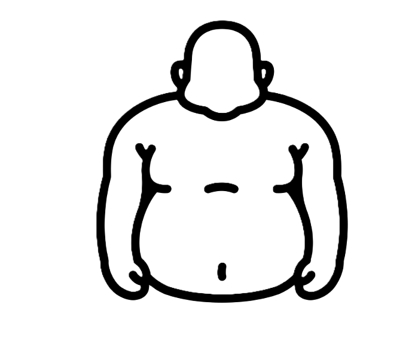
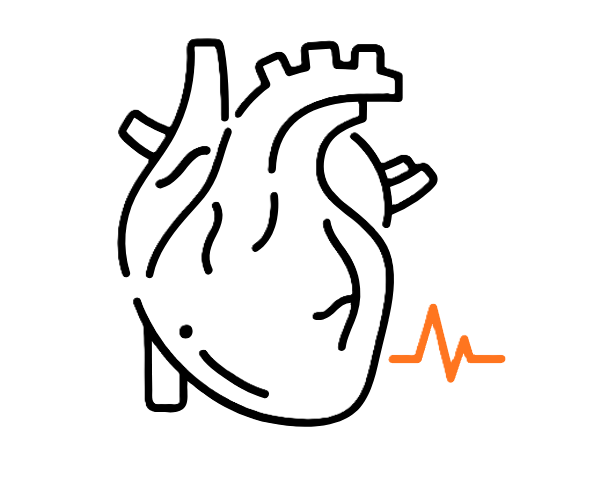
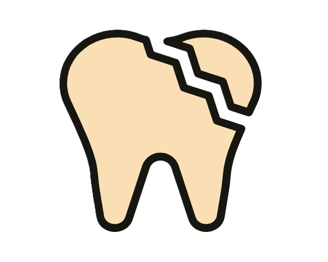
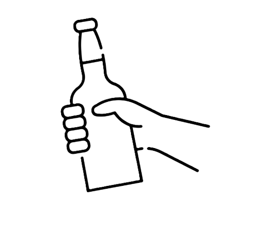

Refrigerantes
Alerta de
alto consumo
O que pode causar

Obesidade

Problemas cardíacos
Diabetes

Cáries
Gordura no fígado

Vício
Enfraquecimento dos ossos
Ingredientes
- Açúcar ou adoçantes
- Cafeína
- Ácido fosfórico
- Corantes artificiais
Embora o fósforo seja necessário para a saúde, foi demonstrado que consumir muito dele esgota o cálcio do corpo, nutriente essencial para a saúde dos ossos e dos músculos.
Alternativas diet
Esses perigos estão associados até mesmo aos refrescos diets. Apesar de não conterem açúcar, essas versões podem despertar o desejo excessivo por outros doces, o que está relacionado ao ganho de peso e condições de saúde como a diabetes.